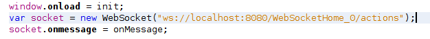
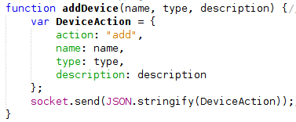
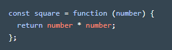
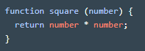
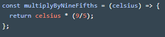

Disclaimer: All citations are numbered with brackets. Refer to the bibliography for source.
Most of my research this month was on how HTML and CSS worked together and how I could do build a website from them. I learned the basics of HTML, such as the tags and elements that go into a HTML document, and its syntax from HTML & CSS design and build websites. Once I figured out how HTML worked, I built the website and ended up looking like it was a website that was prehistoric. So I started learning the basics of CSS, enough to know how to design a website to make it look more modern. It was also necessary to design the home page of the project and how the user can interact with the project. HTML uses elements, which are comprised of opening tags and closing tags. For example <p> is a tag representing a paragraph tag where we can write a paragraph text. "<p> This is a paragraph <p>" is an element that has an opening tag <p> and closing tag </p> where “/” means closing. Each element must have an opening and an optional closing tag. Each website contains a head and a body class (<head> and <body> respectively) which can have a variety of elements ranging from paragraphs to headers, which is different from head, to tables to linking photos or text to other websites or parts on the website and more. CSS styles the website, making it more modern-looking. We can style all the paragraph elements or all divider classes to style the website until you get a desirable result. We can style the website by changing font size, color, weight (meaning how bold it is), position, and more.[6]

For example, the sample code -that is used to build my website- from above changes all <h2> elements (or level 2 heading) in a HTML document to the following code. By using font-family, the font changes fromt the default font (Times New Roman) to Courier New or Courier, depending on what the computer or browser supports. It also makes the text appear to be in the center of the window by using text-align. We can also change how text looks by underlining, adding border line, and more by using text-decoration.
In the code above, I am changing the style of the links, which is represented by <a> in HTML and why there is an a after ".theThings", on tabs on top of the page, which I named "theThings". In it I am changing the background to grey , which can be changed by changing the amount of red, green, and blue shown on the screen or rgb. I also changed the font color, throught "color:", to black through the same process. I also gave the rounded corners through "border-radius:". "display: inline-block" treats the tabs as if they are in the same line instead of putting them in seperate lines. Padding changes how much space I want between the the text and the border, in this case the border is a outline of the tab, and margin changes how much space I want between the border and anything outside.
These are just a handful of ways to design any webiste. We could change how the link looks like when the mouse hover over a piece of text or iamge or where exactly I want to position my image or text. For my website, I wanted to keep the style simple and easy to use for anyone viewing my webiste and not make it as fancy as most companies will do.
By the time I got my website running, it was blocked from the school network for almost a week because they thought my website had malware. I didn't get to know why the filtering system thought my website contained malware, but I contacted the district help desk to report on my website getting blocked. It took a day for some technicians to get my website unblocked from the school network.
In addition to learning HTML and CSS, I found a website that shows me how I could utilize web socket capabilities by using libraries in Java instead of using C or JavaScript[12], although I may need to know JavaScript enough to change any settings such as turning on or off anything within the project, and all I need to do was to learn more about what those libraries do and how I could utilize those. I also have to use a different IDE (Net Beans) so that I could use some of those libraries and it is also what the website used to demonstrate these libraries. Net beans also has a simple to use GUI which will help with what the project will look like as I am going through building it. So instead of building a new Web socket, I will be using libraries to implement what I need to a web socket connection.
I am progressing though my timeline as planned. So far the only major problem I ran into was my website was blocked from the school network, which didn’t affect my timeline and was fixed by contacting the district help desk. Another issue I found was my website looks too basic for a company website, which i’ll be fixing throughout the year. I learned the basic HTML and CSS and made improvements to the website with that knowledge. I also figured out what languages I’ll be using, which are Java and JavaScript [12]. My website is unblocked from the school network.
The first couple days of November I researched on how to use NetBeans and its GUI (stands for graphical user interface where the user can interact with the application). The GUI works by dragging and dropping items such as a text box or buttons onto an area where the viewer will see and making some adjustments to those specific items that are used in different programs. [13] NetBeans also has an intuitive UI where it has auto complete and some keyboard shortcuts that make building code more quickly and efficiently, which is a major improvement than the other IDE I used to use, which was BlueJay. [8] I also used Udemy to learn some of the other features that I didn't learn from YouTube videos since YouTube had more videos on the GUI than the IDE itself. After I learned the basics of NetBeans, I tried to make a simple program that converts yards to meters and a guessing game so that I can refresh my Java skills and learn how the GUI works. After I finished learning how to use NetBeans, I started working on getting the code from Oracle that shows how to use web sockets. For their example, there is a UI where we can input devices on it and see if they are on or off and change that device to either turn on or off. However, I ran into a couple problem. One of the problems that the glassfish server would not even start because it would not find the target. I tried giving it a different target but it also kept giving me the same error. But when I changed it to a blank target and the defaults it was giving and the server started. I tried doing research on what the target does and I still have not found the answer to that. I even asked my advisors what difference it made and they don’t know either. The other problem I ran into was when I ran the example code, it would not show current devices listed right after I add the device. I tried debugging code on the java and JavaScript files and they all ran as it should. The issue was when I had a different file name than the example code had and I had to change the path of the new web socket to the exact file name I have.
The example code named their file "WebsocketHome" and their path is also "WebsocketHome", meaning it should work as expected
.png "Error 404")
However, I named my file "WebSocketHome_0" shown on the left side of the screenshot and my path was to "WebsocketHome", which is why it kept giving me an error 404 where it couldnt find the project and all its files.
So I only have to change the path name and everything should work fine, which it does.
I managed to get through all the goals I wanted to accomplish for November even though I planned on focusing some attention to my website and how it should be improved. I also plan on making some changes to my timeline since I think it would take some more time to understand what the code does and why they did it and finding other ways that this could have been done. I also plan on learning JavaScript instead of C so that I can understand part of what the code does and make some changes to it if I need to. The problem I ran into that I discussed set me back a day, which didn’t affect my timeline too much to change upcoming work. I also tried to get information about how servers and client communicate but I did not understand how it works since it is complex and complicated. I will try to get to that later in December so that I can ask my advisor.
First couple days of december was dedicated to researching what the example did in order to use websockets and how they managed the devices that the user enters into the forms.There were parts of the code I didn't understand such as HashSets and JSON and what they are doing. Also in order to understand what the code is doing, I will have to figure out what the JavaScript file was doing so I have to learn JavaScript to know what was going on and see how I could use it in my project. First I wanted to look at the Java code in the example code and found out that the devices that the user puts is saved into Hash Sets, which are similar to ArrayList (a function that stores any sort of data into a list without having a limited number of spots to store information) in how it functions but different in a way that ArrayList arrange the data into chronological order and can add duplicate pieces of data while HashSets don't do any of that and ArrayList implement the List interface - meaning ArrayList is based off an interface or a layout of what something does - while Hash Sets implement the Set interface. They use Hash Sets in the example code so that they can avoid multiple duplicates of the same device, which would take up more space in servers if they used ArrayList even though it would have also worked. The rest of the code also contains 3 classes: Device, DeviseSessionHandler, and DeviceWebsocketServer, which by the time I understand how they did it will give me an idea on how to manage a websocket connection and the devices in the final product. Device is used to give the server information on what a device is and what information it has such as name, status, and description.
As you can see from the screenshots of the program running from the last journal entry, we ask the user to enter a device and information such as its name, applience, and description of that particular device. In the code above, we make a Device class so that computers can understand what a Device is. It carries information such as the device id, name , status, type, and description that are saved as variables. In order to retrieve that information like those variables, we make getter methods (or a function that returns the variable) so that the computer can show that information back to the user. The other classes are hard to explain right now because they used many libraries to make the code work so I have to research on how those libraries are used and what they do.
I also encountered JSON while looking at the code and was used throughout the code in Java and JavaScript. JSON turns out to be a language used in JavaScript that specializes in making objects more efficient than XML, another programming language that was used before JSON for creating objects and transfering data, and transferring information from the website to servers or computers more efficiently than XML.[10] In order to figure out how JSON is used in Java and JavaScript, I have to know JavaScript, which will help with writing my own JavaScript code for the project instead of making basic code. I also used Codecademy to learn JavaScript. While learning JavaScript, I realize that JavaScript and Java are different in terms of how each language is used and how some of syntax and functions work. For example, when we make variables in Java, we start off by saying that the variable should be public variables or private variables (accessible from within the class or anywhere else outside the class) and what type of variable it is going to be such as an integer or a string (meaning letters and words). In JavaScript, we have to declare if the variable is a constant and can be slightly changed (called “const” variables) or a concrete variable that will never change (called “let” variables) [7]. This was important in how I should write code in JavaScrpit because it more flexible in what I can do and not do whereas Java is more strict and picky, which can be a good thing for programmers since we don't have to worry about any coding logic errors.
After I learned some of the basics of JavaScript, I started looking though the example code to see how they used websockets.
In the second line of code above, we called a var (which means variable that can store anything from integers to objects) named socket that stores a Websocket object. This establishes a connection between browser and server and handles all the work when we have to transfer data from the browser to the server and when it needs to retrieve information from server to the browser.
The code above is a function when the user want to add a device to their list that requires three pieces of information from the user: name of the device, type of device, and a description. It then saves that information into an object called 'DeviceAction'. We can see that 'socket' is going to send information to the server. However, it requires a string to actually run the function and we want to send the object 'DeviceAction'. JSON is there so that it can make that object that the user inputs into a string so that socket can send DeviceAction to the server.
The rest of the code is the same idea as that piece of code, except there are functions when the user want to remove, change, or print the device onto the screen.
I am progressing through my timeline as normal, except I didn't learn enough JavaScript to understand the code and that is also taking more time to learn than I expected since the example code had libraries that I have not seen or heard of before and the way they wrote the code is more complex than I thought. I also need to ask my advisor on how the Java classes mentioned above work, which will set me back a couple days or weeks since we are both busy and find . I will need to change my timeline a bit so that I can learn JavaScript while learning how websockets function (which I did but I need to know what the libraries do and how they are used in the example code).
Half of January was spent learning JavaScript and understanding the rest of example code. I first learned how to makes classes and objects in JavaScript. A function is used to define it purpose on the program and contains a function name, an argument, and code. For example, we can make a function that can multiply two numbers. The two numbers are the argument; we can name the function “multiply” or whatever makes sense that is easily understood by other programmers, and code that can multiply those two numbers and return them. There 3 main ways I learned to create a function: through an expression, a function declaration, and arrow notation. We can make a function through an expression by setting a function equal to whatever we want to call the function.
In the image above we can see how we can make a function though an expression. In this case we are calling this function “square”, which squares the number that it is given. The argument is “number” that is given to the function. The code inside the function is going to multiply the number by the number (essentially squaring it). However, the code will interpret the code as we just want it to multiply the code, meaning it won’t tell us what the answer is. In order for the code to give us the answer, we use ‘’return” to tell the code that we want to see the answer. So now we have function that can square any number for us.
Another way of creating a function is though a function declaration. In the code above, we declared a function called square with an argument of “number” that returns a value of “number” times “number”. Here we took the same idea from the other code of how we used function expression to write functions. They both do the same thing but are written in different ways. We write it in different ways because one way of writing a function is more convenient than writing in a different way depending on the situation.
The last way I learned to write functions is through arrow notation. This time we are trying to partially convert from celsius to fahrenheit. Our argument here “celsius”; the function name is “multiplyByNineFifths”; and the code multiplies celsius by nine-fifths.
We don’t primarily use functions to do math for us. We can make it change how websites look though executions of functions in certain situations or send information from our browsers to servers through multiple executions of functions.
Along with functions, I learned how classes work. A class is like a blueprint of an idea we have but are different in some way. Let’s say you have a hospital. Hospitals must have doctors and nurses and other employees there. Here our idea is employees in a hospital but they are all different in terms of what specialty they have or certifications. In the code above, we have a class called “HospitalEmployee”. We create variables based on characteristics of a HospitalEmployee, in this case we defined those characteristics as what their name is and how many vacation days they have left (variables names are “name” and “remainingVacationDays” respectively). We also create a constructor for the class since all classes require constructors. A constructor is how the class is called from outside the class. It builds the object to shape what it is. For example, let’s say you have an employee named Bob. We call the class using the constructor by declaring an instance of that class. We would write “var Bob = new HospitalEmployee(“Bob”)”.
In addition to learning what functions and class are in JavaScript, I tried to learn how modules worked and how they would be useful. Modules are like snippets of code that can be used throughout writing the rest of the program. They are like libraries but it’s code that programmers themselves develop for their own code. For example, let’s say we are building a program for teachers that look over student’s progress over a specific topic. If we don’t use modules, we would have redundant code that sets up the same thing but for different students such as what topic they are on or how they are progressing. This method is time-consuming and seems intimidating when looking at the code since it would be complex. If we do use modules, then we can make a module that can store information such as a student variable for storing the name of the student and progress variable that stores how the student is progressing. In the main file where the code is, we will call the module instead writing long and complex code. This makes the code more efficient and take less time to write code that can be used throughout the program. While it would come in handy in certain applications. It would not be as useful for my project since we don't have call the same functions repeatedly. Each line is distinctively different from each other so we don't have to use modules.
I asked my advisor what I should put in the final product. However, he was busy and couldn’t get in touch with him for the last couple weeks. So, I thought maybe I’ll some research on what data centers do that might help with understanding what he wants me to put in. However, I only found out what they monitor from the climate of the room to how they are organized and nothing coding related or problems that could be solved by code. I did find a data center monitoring program but all it does was
The last weeks of January was spent trying to plan out what I need to put into my project only judging by the example code that I saw. I am going to need a UI (User Interface) and the server-side programming. For the UI, I planned on making the page look similar to my website with some changes to fonts and colors on it and have other functions such as forms using HTML and CSS. For the JavaScript portion, I planned on making websocket communication instead of HTTP communication and send information from what the user puts into the form and send that to the server. On the server side of the project, I planned on having a class that retrieves data and handling all the messages that the user wants to accomplish such as adding a server or removing a server. I also need to create a class that is based on server that can store information that is need.
I need to start focusing on what I need to put in into the final product as soon as possible or I may be behind on my schedule. Also learning JavaScript took some time to process since it is different then what I am used to. However I did manage to get what I wanted to get done over January so I am not behind on my timeline.